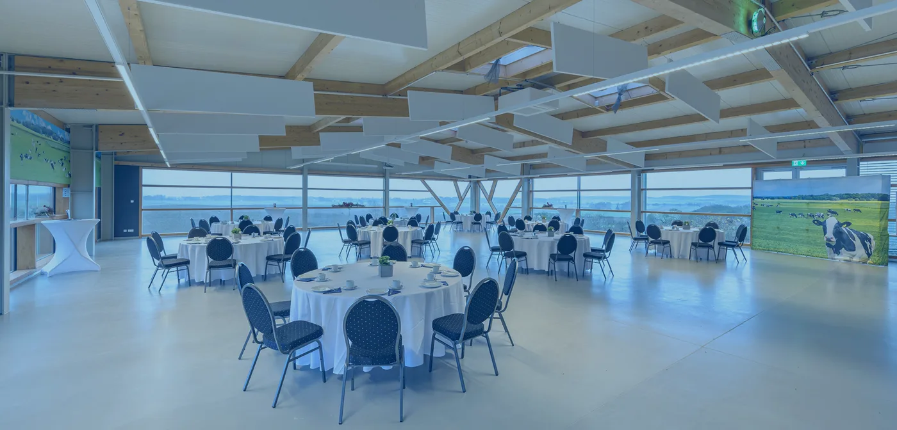

- Startseite
- Eventlocation
Bis zu 120 Gäste
Feiern mit Blick über die Uckermark
Im ersten Stock unseres Hofcafés feiert ihr mit bis zu 120 Gästen, mitten im Biosphärenreservat Schorfheide-Chorin. Ob privat oder für die Firma.

Auf einen Blick
Die Eventlocation von Hemme Milch liegt in der 1. Etage über dem Hofcafé in Schmargendorf bei Angermünde. Sie bietet Platz für bis zu 120 Gäste, ist auch am Wochenende und an Feiertagen buchbar und eignet sich für Feiern, Seminare, Workshops und Tagungen.
- Gäste passen in den Raum
- 120
- mit Fahrstuhl und Treppe
- 1. Etage
- auch Wochenende und Feiertage
- 7 Tage
- Pakete zur Auswahl
- 3
Der Raum
Direkt im Biosphärenreservat Schorfheide-Chorin liegt der Hemme-Hof. Neben unserem beliebten Hofcafé und Milchladen bieten wir einen Eventbereich mit einzigartigem Ausblick, der für alle denkbaren Veranstaltungen bis zu 120 Gäste willkommen heißen kann.
Der Raum liegt in der 1. Etage, erreichbar über Fahrstuhl oder Treppe. Oben erwartet euch ein offener, einladender Bereich. Unsere Mitarbeiterin zeigt euch gern den Raum und erklärt alle Einzelheiten.
Während der ganzen Mietzeit habt ihr immer eine Ansprechperson, die eure Wünsche umsetzt. Abseits von Hektik und Trubel kümmern wir uns um alles, damit ihr euch auf eure Veranstaltung konzentrieren könnt.
Dafür ist der Raum gemacht
Seminare & Meetings
Abseits von Hektik und Trubel, mit einzigartigem Ausblick.
Workshops und Trainings
Empfänge, Tagungen und Konferenzen
Für bis zu 120 Gäste.
Feiern
Im großen und kleinen Rahmen, privat oder geschäftlich.
Unsere Pakete
Ihr möchtet eure Veranstaltung selbst planen und betreuen? Dann bekommt ihr bei uns eine Location mit einzigartiger Aussicht. Ihr braucht Hilfe bei Planung und Umsetzung? Sprecht uns an, auf Wunsch erstellen wir ein individuelles Angebot.
Familienfeier
Feiern im kleinen Rahmen
Seminare und Meetings
Noch Fragen?
Schreibt uns oder ruft an. Wir zeigen euch den Raum gern vor Ort. Eure Gäste erreichen den Hof auch mit Bahn und Bus, alles zur Anfahrt steht unter Hof erleben.
Fragen zur Eventlocation
Wie viele Gäste passen in die Eventlocation?
Bis zu 120 Gäste. Der Raum liegt in der 1. Etage über unserem Hofcafé und ist mit Fahrstuhl oder Treppe erreichbar.
Kann ich auch am Wochenende feiern?
Ja, der Veranstaltungsraum ist auch an Wochenenden und Feiertagen buchbar.
Kann ich meine Feier selbst organisieren?
Ja. Ihr könnt eure Veranstaltung selbst planen und betreuen. Wer Hilfe bei Planung und Umsetzung möchte, spricht uns an. Auf Wunsch erstellen wir ein individuelles Angebot.
Wie erreiche ich euch für eine Anfrage?
Telefonisch unter 03331 252525, Montag bis Freitag von 10 bis 14 Uhr oder nach Vereinbarung.